Uebersicht: Hate Speech Klassifikation
11.950
Dokumente gesamt
97,9%
NON_HATE
2,1%
HATE
96,4%
Durchschn. Konfidenz
1.446
Migrations-Dokumente
1.195
Reden mit Migrations-Bezug
Klassifikations-Ergebnisse
Label-Verteilung
Verteilung der HATE und NON_HATE Klassifikationen.
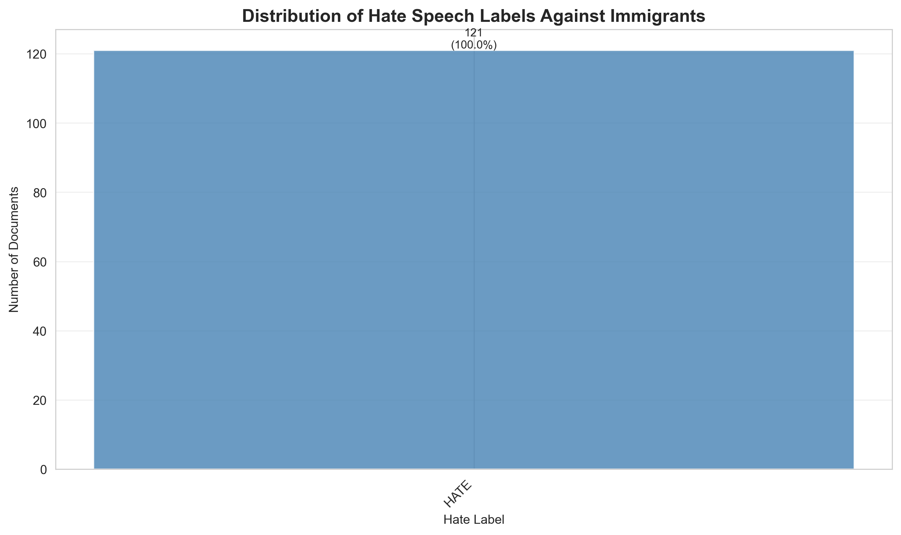
Konfidenz-Scores
Verteilung der Modell-Konfidenz fuer alle Vorhersagen.
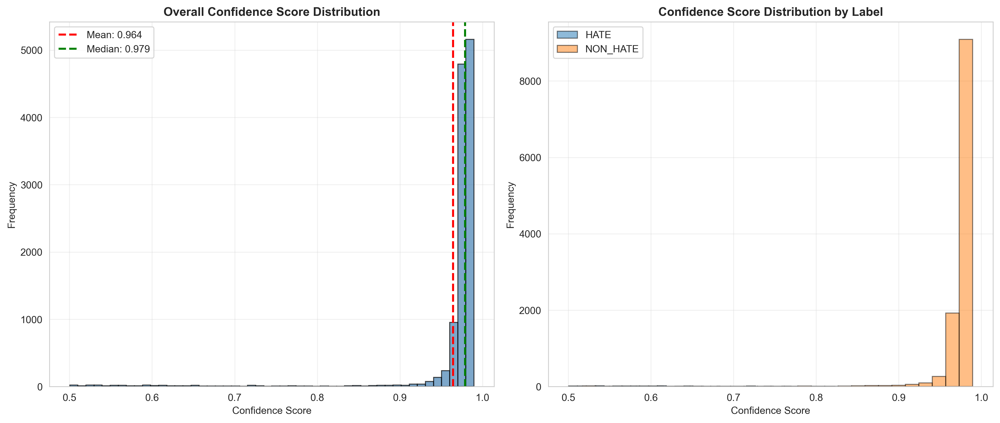
Score-Verteilung nach Label
Box-Plot der Konfidenz-Scores pro Kategorie.
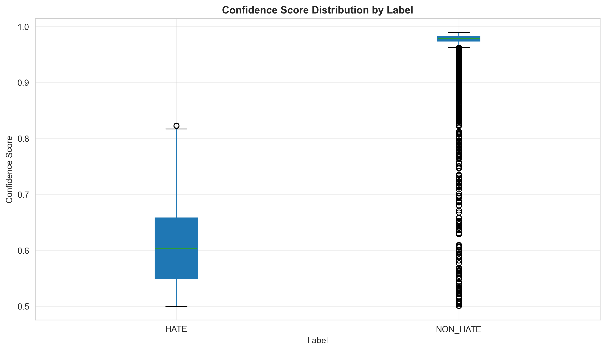
Konfidenz-Heatmap
Zusammenhang zwischen Labels und Konfidenz-Levels.
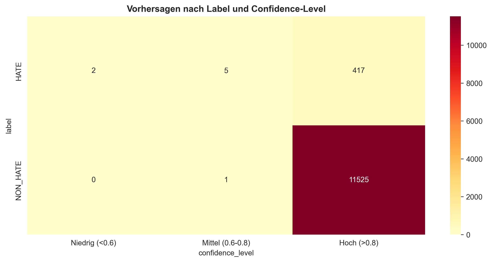
Negative Adjektive im Migrations-Kontext
Adjektiv-Analyse mit BERT Sentiment
Analyse von Adjektiven, die in Verbindung mit Migrations-Begriffen verwendet werden. Sentiment-Klassifikation mittels deutschem BERT-Modell (oliverguhr/german-sentiment-bert).
9.297
Adjektiv-Vorkommen
2.955
In negativem Kontext
31,8%
Negativ-Anteil
61
Unique Adjektive
Top Negative Adjektive
Haeufigste Adjektive in negativem Sentiment-Kontext bei Migrations-Begriffen.
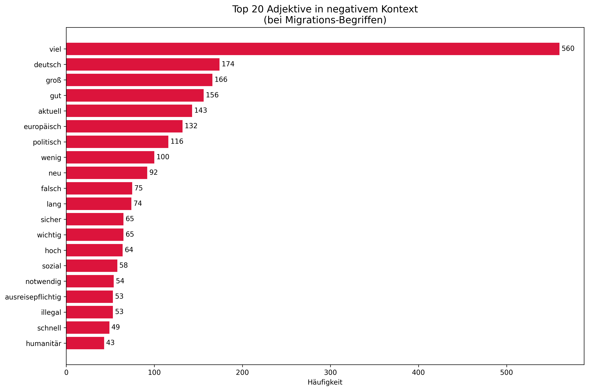
Sentiment-Verteilung
Anteil negativer, positiver und neutraler Kontexte.

Negativ vs. Positiv
Vergleich der Top-Adjektive in negativem und positivem Kontext.
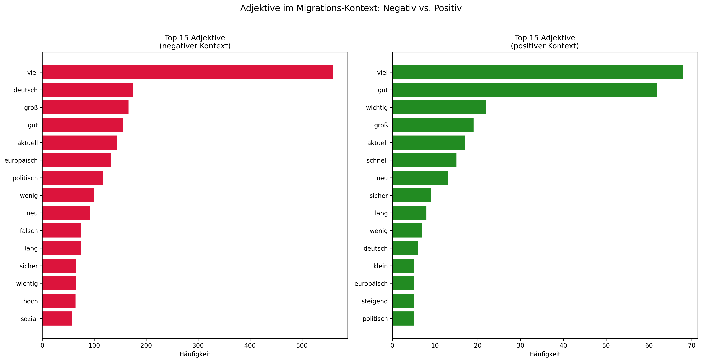
Analyse nach Parteien
Wer verwendet welche Adjektive?
NER-basierte Zuordnung: Identifikation der Redner anhand des Formats "Name (Partei):" in den Parlamentsprotokollen. Analyse der verwendeten Adjektive im Migrations-Kontext.
| Partei | Reden | Adjektive | Top 3 Adjektive |
|---|---|---|---|
| AfD | 338 | 443 | gut (91), gute (37), wichtig (35) |
| LINKE | 336 | 401 | gut (97), wichtig (47), gute (23) |
| SPD | 194 | 278 | gut (67), wichtig (40), gute (22) |
| GRUENE | 133 | 208 | gut (55), gute (22), wichtig (21) |
| CDU | 117 | 152 | wichtig (21), gut (17), notwendig (13) |
| FDP | 77 | 109 | gut (25), wichtig (18), gute (8) |
Adjektive nach Redner-Partei
Anzahl der Adjektive im Migrations-Kontext, zugeordnet nach Partei des Redners.
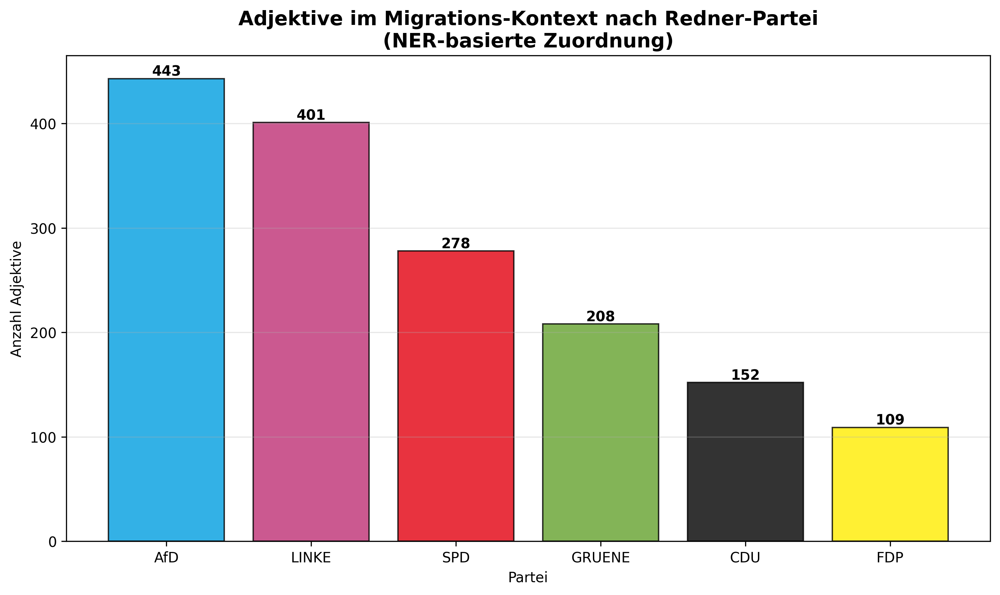
Stark negative Adjektive
Verwendung von "illegal", "kriminell", "gefaehrlich" etc. pro Partei.

Heatmap: Adjektive pro Partei
Welche Partei verwendet welche Adjektive wie haeufig?

Prozentualer Anteil negativer Adjektive
Anteil stark negativer Adjektive am Gesamt pro Partei.
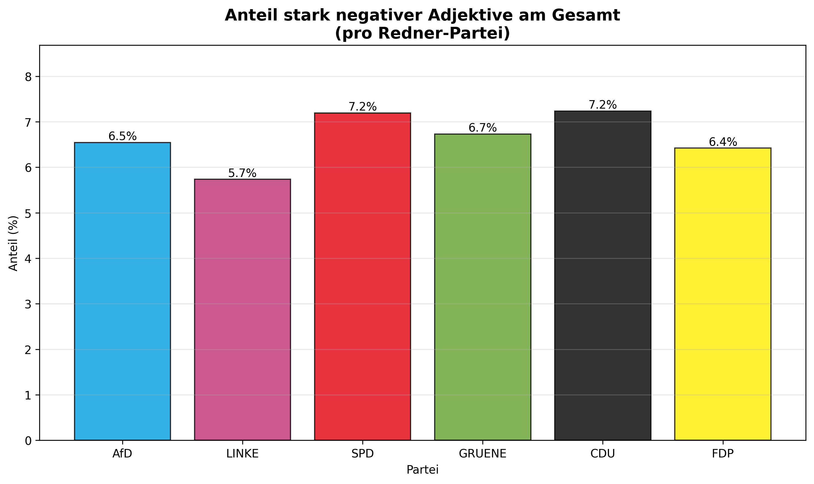
Parteierwaehnung vs. Redner
Wichtiger Unterschied:
- Parteierwaehnung: Welche Partei wird im Text erwaehnt? (z.B. andere Parteien sprechen ueber AfD)
- Redner-Partei: Welcher Partei gehoert der Redner an? (NER-basierte Zuordnung)
Negative Adjektive nach Parteierwaehnung
Haeufigkeit negativer Adjektive in Texten, die eine bestimmte Partei erwaehnen.
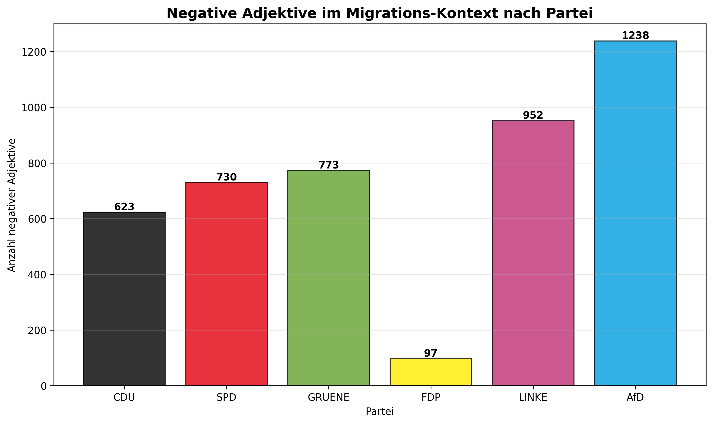
Heatmap nach Parteierwaehnung
Top-Adjektive in Texten mit Parteierwaehnung.
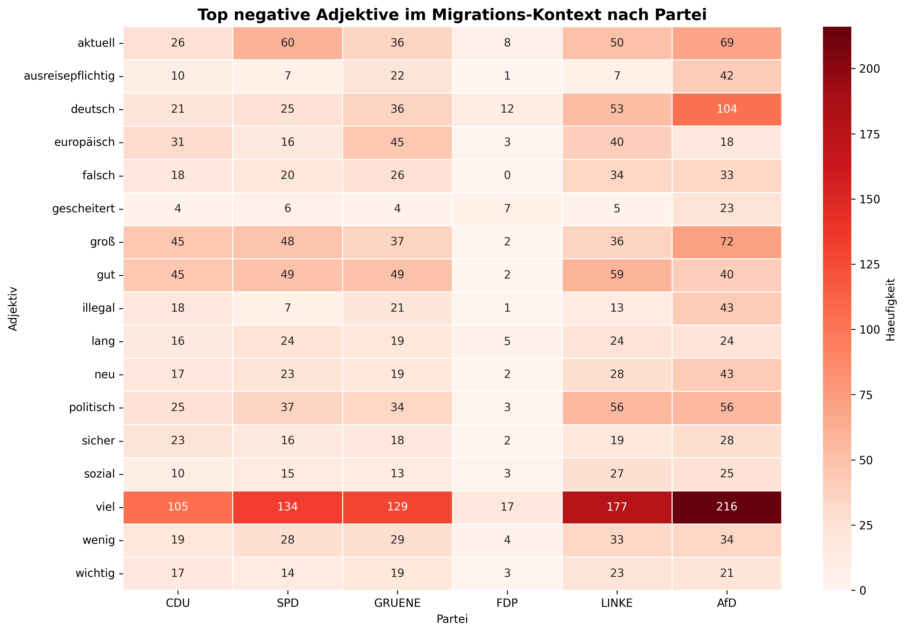
Zeitliche Entwicklung (AfD)
AfD: Entwicklung 2019-2023
Zeitliche Entwicklung der negativen Adjektive im Migrations-Kontext bei AfD-Rednern.
2019
250 Adjektive
2020
194 Adjektive
2021
175 Adjektive
2022
294 Adjektive (Peak)
2023
252 Adjektive
Adjektive pro Jahr
Anzahl negativer Adjektive im Migrations-Kontext pro Jahr.

Entwicklung spezifischer Adjektive
Wie entwickeln sich "illegal", "kriminell" etc. ueber die Jahre?

Heatmap: Jahre x Adjektive
Top 15 Adjektive pro Jahr im Ueberblick.
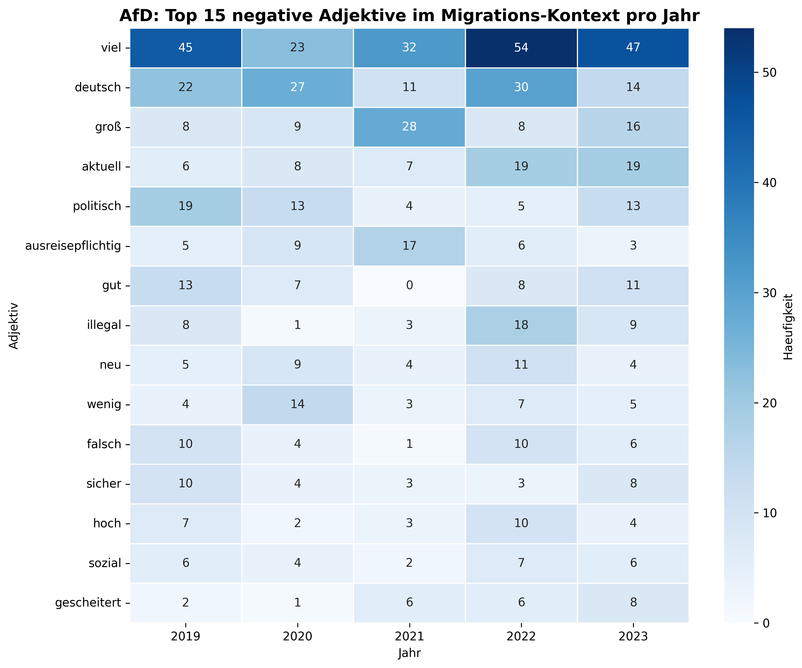
Anteil stark negativer Adjektive
Prozentualer Anteil von "illegal", "kriminell" etc. am Gesamt.
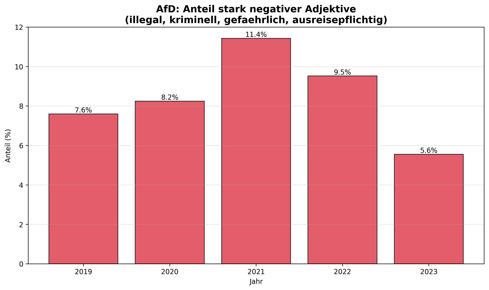